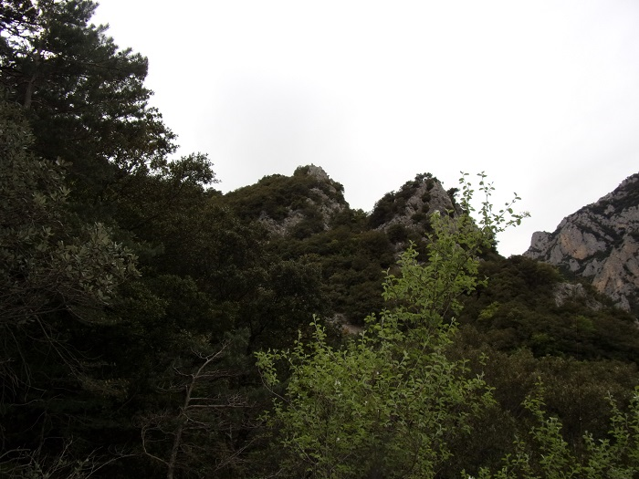

La route actuelle de Quirbajou, la seule route goudronnée qui permet de rallier ce village, part d'à coté du confluant du Rébenty avec l'Aude. Mais cette route est relativement récente.
D'autres chemins ont existé entre les deux villages car à une époque le chemin le plus rapide pour rejoindre Quillan passait par la montagne du Quirbajou et longeait les gorges de l'Aude.
A ma connaissance il existait deux chemins pour aller la-haut :
Les photos liés à cette page porteront donc uniquement sur le premier de ces chemins, celui utilisé par l'ancien facteur avec sa bicyclette, une fois qu'il avait desservi St Martin

Début du chemin de Quirbajou, depuis la route départementale

Prolongation de l'autre coté de la route
Originellement, avant le traçage de la route départementale, le chemin se poursuivait jusqu'au pont vieux (voir la page correspondante). Aujourd'hui il est peu évident de voir que les chemins qui partent des deux cotés de la route étaient originellement reliés...
Les photos suivantes sont prises de points de vue proches du chemin. Nous pouvons en particulier distinguer les gorges de la pierre lys sur leur longueur et Quillan au loin

point de vue du chemin de Quirbajou, vue des gorges de la Pierre-Lys

point de vue du chemin de Quirbajou, vue sur Quillan
En 1889, le conseil municipal de St Martin vota des crédits pour que la route actuelle soit construite, comme elle passe sur une partie du territoire de la commune (peut être pour faciliter l'accès au col de Gages ? ). Ci dessous le plan qui fut établi à l'époque (1890)1. Ce plan montre le chemin vicinal n°3 même si le tracé parait quelque peu "simplifié"

En rouge la portion de la route qui est sur le territoire de St Martin et qui deviendra le chemin vicinal n°5.
En face du village de St Martin le chemin vicinal n°3, sujet de cette page.
( Ce plan montre aussi la Métairie d'Artozoul et le chemin qui passe par le "Pas du Taïchou", par contre il ne montre pas le chemin de Planèzes qui n'a dû être tracé qu'en 1901.)
Les élargissements successifs de la nouvelle route (dont celui de 1903) ont entraîné la fin de l'usage du chemin vicinal n°3 qui s'est lentement refermé sur lui même, partiellement préservé par les promeneurs qui vont à la croix
Cette balade en partant de Saint Martin prend tout au plus une heure allée/retour.
Le chemin vient d'être nettoyé très proprement par Paul et Hugo aussi cette sortie est facile, même si le chemin fait environ 25 / 30 % de dénivelée sur toute sa longueur.
L'objectif est ce rocher qu'on aperçoit tout le long de l'ascension
Le rocher le plus haut des 2 n'est pas celui qu'on croit, la perspective vue d'en bas est trompeuse...

Là, cette fois, en montant un peu plus, on ne voit même plus le rocher qui est notre destination du jour
Qui réapparaît enfin, cette fois détaché
Tout le long de l'ascension nous pourrons apercevoir le dôme du Quirbajou à notre droite, la montagne qui longe les gorges de la Pierre-Lys, et que pendant des siècles il a fallu contourner pour atteindre la vallée de Belvianes et Quillan

Le temps étant couvert et menaçant, l'heure tardive, les couleurs des photos s'en ressentent
Le petit col à gauche du Quirbajou permettait le passage vers Quirbajou en venant de la pêcherie
Le chemin même s'il ne permet plus à 2 personnes de monter de front est très propre et facile


A l'embranchement entre le chemin de la croix / col de gages tout droit et le chemin de Quirbajou, prendre à droite
Cet embranchement se trouve une trentaine de mètres après avoir pris le virage qui fait rentrer dans la forêt
Avant on était à flanc de montagne avec de nombreux points de vue sur le Gal et la vallée remontant jusqu'aux gorges de la Pierre-Lys
Le chemin est alors moins passant, mais bien tracé et sans obstacles, sauf ce court passage "silassiens"
Une ancienne coulée de boue a emporté le chemin sur 4 mètres, n'empêchant pas le passage, mais le rendant plus difficile sur ces quelques mètres
Nous arrivons rapidement alors sur le plateau (quelques cent mètres environ après l'embranchement du chemin de la croix). Plateau est beaucoup dire car suite à cette légère courbe le chemin continuera à flanc de coteau vers Quirbajou quasiment à l'horizontale, mais là à droite un espace relativement plat s'étend jusqu'aux rochers aperçus en montant
A gauche le chemin vers St Martin, à droite celui vers Quirbajou, derrière le sentier vers les rochers
Aucune difficulté, alors, en suivant le sentier pour arriver jusqu'aux rochers et au précipice...
Là se dégage une vue des plus hautes maisons de St Martin, jusqu'au gorges de la pierre-lys qui apparaissent en enfilade (en continuant le chemin vers Quirbajou, surtout en hiver, en particulier quand on a l'occasion de le suivre après une période de neige, le fond de la gorges apparaît clairement sur quasiment toute sa longueur, mais ce jour là ce n'était ni l'objet de la promenade, ni la bonne saison)
Même si les photos de Paul ci-dessus prises au même point de vue sont meilleures, je vous propose certaines réalisées ce jour là - du nord au sud

La vallée jusqu'aux Gorges de Pierre-Lys, longeant le Quirbajou
La falaise du Gal
Le troglodyte du Gal, au milieu de la photo
Le terrain du Couvent (la partie boisée à droite de l'Aude) - les ruines sont le petit triangle gris au milieu du bois...
Le col de St Martin et cap de fer
On dirait presque que nos rochers sont alignés avec le cap de fer... Mais ce n'est qu'un effet d'optique, l'alignement passe plus au sud
Les plateaux de Planèses (le plus bas et le plus grand), celui du Clot (juste au dessus), surplombé par le sommet des Roumens
La végétation qui s'accroche sur ces rochers est étonnamment principalement composée de fleurs, le coté ensoleillé vraisemblablement
Plus bas, j'ai pris ce pied de buis, symbole de la résistance de ce buisson à l'attaque impressionnante de la Pyrale du buis d'il y a 2 ans, avec ces nuées de papillon sur toute la haute vallée que nous avons subi, jours et nuits
Ce point de vue me semble le plus facile d'accès, par rapport à ceux que je connais autour de St Martin, même si le paysage découvert est pour grande part assez proche de celui de la croix : l'axe étant différent, il mérite d'y venir. Un circuit avec celui de la croix est pertinent puisque les 2 points de vue ne sont qu'à 10 minutes l'un de l'autre et partagent un bon kilomètre de chemin ascensionnel commun.
1Archives départementales de L'Aude - 2 OP 2782